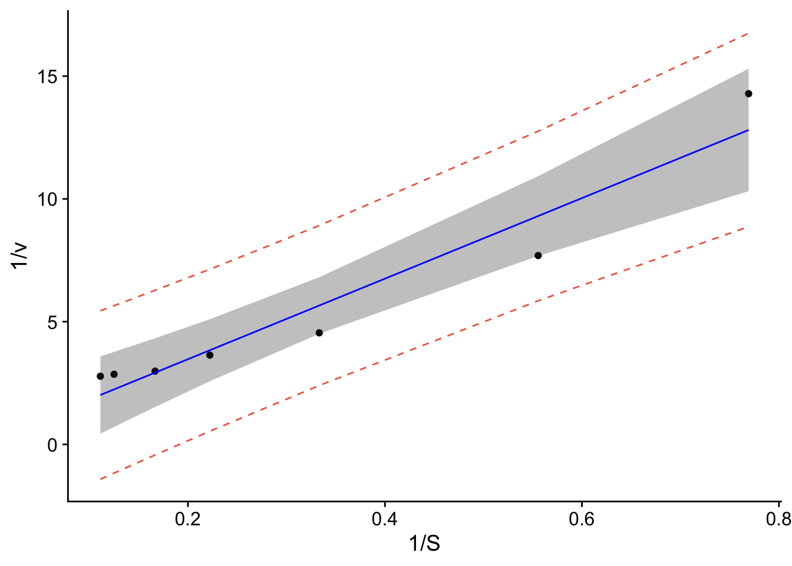
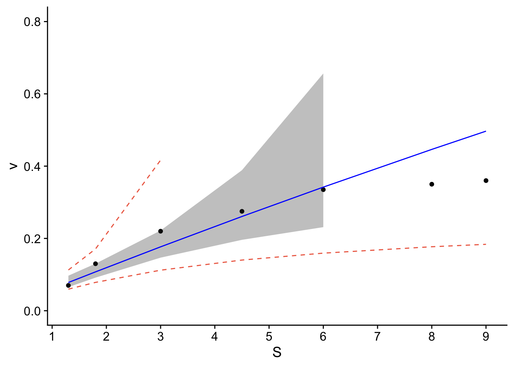

Linear Regression Examples
This tutorial is derived from https://www.datacamp.com/community/tutorials/linear-regression-R
8.8 Linear Regression
R-studio provides the ability to create linear regressions easily, sometimes too easily. While this is not meant to be a substitute for a statistics course, the objective in this short tutorial is to develop a workflow approach that allows you to test the validity of regressions.
8.9 Assumptions
Below is a figure from https://pubs.usgs.gov/tm/04/a03/tm4a3.pdf.
8.9.0.1 Workflow:
- Read in data
- Plot data & visualize linearity
- Transform data as appropriate
- Create linear model using lm function. * Assess assumption 1
- review t-values from linear model summary. If the slope and intercept values have resulting |t| > 2, then they are significant.
- review leverage/influence of data points on regression. When data points have high leverage, one of 3 options come into play: (1) Someone made a recording error, (2) Someone made a fundamental mistake collecting the observation; or (3) The data point is perfectly valid, in which case the model cannot account for the behavior
- Test for homoscedasaticity * Assess assumption 3, the variability in the residuals does not vary over the range of predicted values
- if fails, transform data or choose an alternate model/independent variable
- Test for bias * Assess assumption 4, e values generally plot equally above and below zero
- Test for normality
8.10 Example
8.10.2 Step 2. Plot data & visualize linearity
## here you can either start a ggplot or just use the simple plot command. Since we're practicing ggplot, let's stick with this.
p <- ggplot(data.ex, aes(S,v)) + geom_point() +
cowplot::theme_cowplot() + # adds theme
scale_y_continuous(breaks=seq(0,0.8,.2)) + # changes scale to min and max with prescribed spacing
scale_x_continuous(breaks=seq(0,9,1)) +
ylab("v") + # adds y-label with units
xlab("[S]")
p
Check: The resulting plot does not look linear. We will compare 2 transformations:
8.10.4 Step 4. Linear model
Create linear model using lm function. * Assess assumption 1 - review t-values from linear model summary. If the slope and intercept values have resulting |t| > 2, then they are significant. - review leverage/influence of data points on regression. When data points have high leverage, one of 3 options come into play: (1) Someone made a recording error, (2) Someone made a fundamental mistake collecting the observation; or (3) The data point is perfectly valid, in which case the model cannot account for the behavior
# Create linear model, 1st order Michaelis Menton
model.lm <- lm(vt~St, data=data.ex)
summary(model.lm)##
## Call:
## lm(formula = vt ~ St, data = data.ex)
##
## Residuals:
## 1 2 3 4 5 6 7
## 1.47839 -1.61027 -1.11218 -0.19880 0.06114 0.61664 0.76508
##
## Coefficients:
## Estimate Std. Error t value Pr(>|t|)
## (Intercept) 0.1902 0.7762 0.245 0.816147
## St 16.4022 1.9435 8.440 0.000383 ***
## ---
## Signif. codes: 0 '***' 0.001 '**' 0.01 '*' 0.05 '.' 0.1 ' ' 1
##
## Residual standard error: 1.185 on 5 degrees of freedom
## Multiple R-squared: 0.9344, Adjusted R-squared: 0.9213
## F-statistic: 71.23 on 1 and 5 DF, p-value: 0.0003833## (Intercept)
## 5.256963## (Intercept)
## 86.22596Check: |t-values| < 2 for intercept, questionable.
When vm is calculated, it’s a lot higher than reported velocities, and the half-saturation constant ks is higher than the maximum substrate concentration.
# review leverage/influence of data points on regression. Use plot of Cook's D, evaluate subset of CooksD above threshold, and evaluate DFFITS (another influence diagnostic)
plot(cooks.distance(model.lm), pch = 16, col = "blue") #Plot the Cooks Distances.
n <- length(model.lm$residuals)
p <- length(model.lm$coefficients)
subset(cooks.distance(model.lm), cooks.distance(model.lm) > qf(0.1, p, n - p, lower.tail = FALSE)) # determines if there are any flagged observations from CooksD## 1
## 4.809895subset(dffits(model.lm), dffits(model.lm) > 2 * sqrt(p / n)) # determines if there are any flagged observations from DFFITS## 1
## 11.80479For SLR with more than about 30 observations, the critical value for Di would be about 2.4. In the example above, observation 1 was identified as having higher influence for both Cooks and DDFITS. Consider options 1-3 described in workflow, but also intercept was questionable.
8.10.5 Step 5. Test for homoscedasaticity
# Here, the which variable provides the ability to create 4 plots of interest: "Residuals vs Fitted", "Normal Q-Q", "Scale-Location", "Cook's distance", "Residuals vs Leverage"
# To test for homoscedasaticity, review plot of standardized residuals
plot(model.lm, which = 3, ask = FALSE) Check: Variability is a bit more variable.
Check: Variability is a bit more variable.
 Check: Variability above and below 0 does not appear random.
Check: Variability above and below 0 does not appear random. Check: Residuals are not normally distributed. Questionable!!
Check: Residuals are not normally distributed. Questionable!!8.10.8 Application
The workflow provides confidence of a reasonable linear regression model. The final steps are to create a plot with uncertainity bounds and the ability to predict a value and associated uncertainity.
###Workflow:
Confidence intervals are computed using the predict command:
predict(lmheight, newdata = data.frame(age=22.5), interval = “confidence”, level = 0.95)
Prediction intervals are computed as follows:
predict(lmheight, newdata = data.frame(age=22.5), interval = “prediction”, level = 0.95)
Prediction intervals are always greater. While it includes the uncertainity in the regression uncertainties in the slope and intercept, it also includes the unexplained variability in y.
## Warning in predict.lm(model.lm, interval = "predict"): predictions on current data refer to _future_ responses# Use model to create confidence intervals
model.confidence <- predict(model.lm, interval = "confidence")
colnames(model.confidence) <- c("cfit", "clwr", "cupr") #rename columns
# Create dataset that merges dataset
data.all <- cbind(data.ex,model.predict, model.confidence)
# Create ggplot
p1 <- ggplot(data.all, aes(x = St, y = vt)) +
geom_point() + # adds points
geom_line(aes(y=lwr), col = "coral2", linetype = "dashed") + #lower prediction interval
geom_line(aes(y=upr), col = "coral2", linetype = "dashed") +
geom_ribbon(aes(ymin=clwr,ymax=cupr),alpha=0.3) + # confidence band
geom_line(aes(y=fit), col = "blue") + # confidence band
theme_cowplot() +
ylab("1/v") +
xlab("1/S")
p1
data.all$fit <- 1/data.all$fit
data.all$lwr <- 1/data.all$lwr
data.all$upr <- 1/data.all$upr
data.all$clwr <- 1/data.all$clwr
data.all$cupr <- 1/data.all$cupr
p <- ggplot(data.all, aes(x = S, y = v)) +
geom_point() + # adds points
geom_line(aes(y=lwr), col = "coral2", linetype = "dashed") + #lower prediction interval
geom_line(aes(y=upr), col = "coral2", linetype = "dashed") +
geom_ribbon(aes(ymin=clwr,ymax=cupr),alpha=0.3) + # confidence band
geom_line(aes(y=fit), col = "blue") + # confidence band
theme_cowplot() +
ylab("v") +
xlab("S") +
scale_y_continuous(breaks=seq(0,0.8,.2)) + # changes scale to min and max with prescribed spacing
scale_x_continuous(breaks=seq(0,9,1)) +
ylim(0,0.8)## Scale for y is already present.
## Adding another scale for y, which will replace the existing scale.## Warning: Removed 4 rows containing missing values or values outside the scale range
## (`geom_line()`).
8.11 Take 2, try second order!
8.11.1 Step 4. Linear model
Create linear model using lm function. * Assess assumption 1 - review t-values from linear model summary. If the slope and intercept values have resulting |t| > 2, then they are significant. - review leverage/influence of data points on regression. When data points have high leverage, one of 3 options come into play: (1) Someone made a recording error, (2) Someone made a fundamental mistake collecting the observation; or (3) The data point is perfectly valid, in which case the model cannot account for the behavior

##
## Call:
## lm(formula = vt ~ S2t, data = data.ex)
##
## Residuals:
## 1 2 3 4 5 6 7
## 0.371400 -0.737166 -0.056662 0.230297 -0.002375 0.105165 0.089340
##
## Coefficients:
## Estimate Std. Error t value Pr(>|t|)
## (Intercept) 2.4492 0.1877 13.05 4.71e-05 ***
## S2t 19.3760 0.7310 26.51 1.43e-06 ***
## ---
## Signif. codes: 0 '***' 0.001 '**' 0.01 '*' 0.05 '.' 0.1 ' ' 1
##
## Residual standard error: 0.389 on 5 degrees of freedom
## Multiple R-squared: 0.9929, Adjusted R-squared: 0.9915
## F-statistic: 702.7 on 1 and 5 DF, p-value: 1.428e-06## (Intercept)
## 0.408292## (Intercept)
## 2.812661Check: |t-values| >> 2, looks better The half-saturation constant and vm are also consistent with the data.
# review leverage/influence of data points on regression. Use plot of Cook's D, evaluate subset of CooksD above threshold, and evaluate DFFITS (another influence diagnostic)
plot(cooks.distance(model.lm), pch = 16, col = "blue") #Plot the Cooks Distances.
n <- length(model.lm$residuals)
p <- length(model.lm$coefficients)
subset(cooks.distance(model.lm), cooks.distance(model.lm) > qf(0.1, p, n - p, lower.tail = FALSE)) # determines if there are any flagged observations from CooksD## 1
## 9.365224subset(dffits(model.lm), dffits(model.lm) > 2 * sqrt(p / n)) # determines if there are any flagged observations from DFFITS## 1
## 13.90953For SLR with more than about 30 observations, the critical value for Di would be about 2.4. In the example above, observation 1 was identified as having higher influence for both Cooks and DDFITS. Consider options 1-3 described in workflow, but also intercept was questionable.
8.11.2 Step 5. Test for homoscedasaticity
# Here, the which variable provides the ability to create 4 plots of interest: "Residuals vs Fitted", "Normal Q-Q", "Scale-Location", "Cook's distance", "Residuals vs Leverage"
# To test for homoscedasaticity, review plot of standardized residuals
plot(model.lm, which = 3, ask = FALSE) Check: Variability is variable.
Check: Variability is variable.
 Check: Variability above and below 0 somewhat random.
Check: Variability above and below 0 somewhat random. Check: Residuals are not normally distributed. Questionable.
Check: Residuals are not normally distributed. Questionable.8.11.5 Application
The workflow provides confidence of a reasonable linear regression model. The final steps are to create a plot with uncertainity bounds and the ability to predict a value and associated uncertainity.
###Workflow:
Confidence intervals are computed using the predict command:
predict(lmheight, newdata = data.frame(age=22.5), interval = “confidence”, level = 0.95)
Prediction intervals are computed as follows:
predict(lmheight, newdata = data.frame(age=22.5), interval = “prediction”, level = 0.95)
Prediction intervals are always greater. While it includes the uncertainity in the regression uncertainties in the slope and intercept, it also includes the unexplained variability in y.
## Warning in predict.lm(model.lm, interval = "predict"): predictions on current data refer to _future_ responses# Use model to create confidence intervals
model.confidence <- predict(model.lm, interval = "confidence")
colnames(model.confidence) <- c("cfit", "clwr", "cupr") #rename columns
# Create dataset that merges dataset
data.all <- cbind(data.ex,model.predict, model.confidence)
# Create ggplot
p1 <- ggplot(data.all, aes(x = S2t, y = vt)) +
geom_point() + # adds points
geom_line(aes(y=lwr), col = "coral2", linetype = "dashed") + #lower prediction interval
geom_line(aes(y=upr), col = "coral2", linetype = "dashed") +
geom_ribbon(aes(ymin=clwr,ymax=cupr),alpha=0.3) + # confidence band
geom_line(aes(y=fit), col = "blue") + # confidence band
theme_cowplot() +
ylab("1/v") +
xlab("1/S^2")
p1data.all$fit <- (1/(data.all$fit))
data.all$lwr <- (1/(data.all$lwr))
data.all$upr <- (1/(data.all$upr))
data.all$clwr <- (1/(data.all$clwr))
data.all$cupr <- (1/(data.all$cupr))
p <- ggplot(data.all, aes(x = S, y = v)) +
geom_point() + # adds points
geom_line(aes(y=lwr), col = "coral2", linetype = "dashed") + #lower prediction interval
geom_line(aes(y=upr), col = "coral2", linetype = "dashed") +
geom_ribbon(aes(ymin=clwr,ymax=cupr),alpha=0.3) + # confidence band
geom_line(aes(y=fit), col = "blue") + # confidence band
theme_cowplot() +
ylab("v") +
xlab("S") +
scale_y_continuous(breaks=seq(0,0.4,.1)) + # changes scale to min and max with prescribed spacing
scale_x_continuous(breaks=seq(0,9,1)) +
ylim(0,0.8)## Scale for y is already present.
## Adding another scale for y, which will replace the existing scale.The resulting plot contains the confidence and prediction intervals over the range of x-values. Is transforming the data the best approach? The resulting transformation resulted in a linear model. Were the remainder of the tests valid? Not necessarily for the normality. The other approach would be to fit the data with a non-linear best-fit curve. Regardless, you can see how you’d apply linear regression to data.